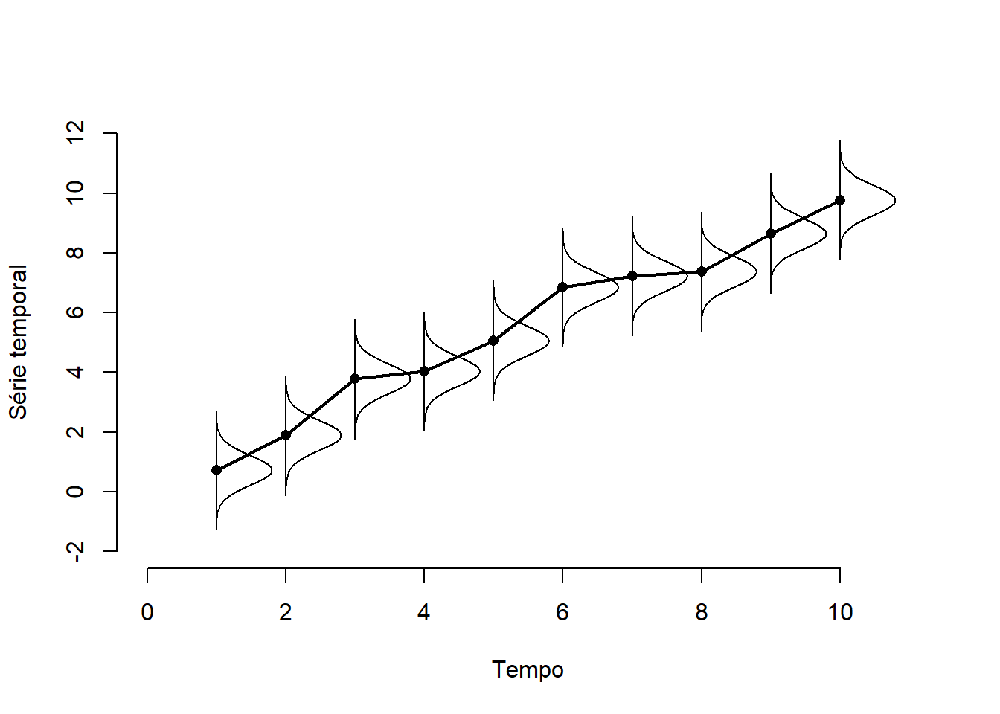
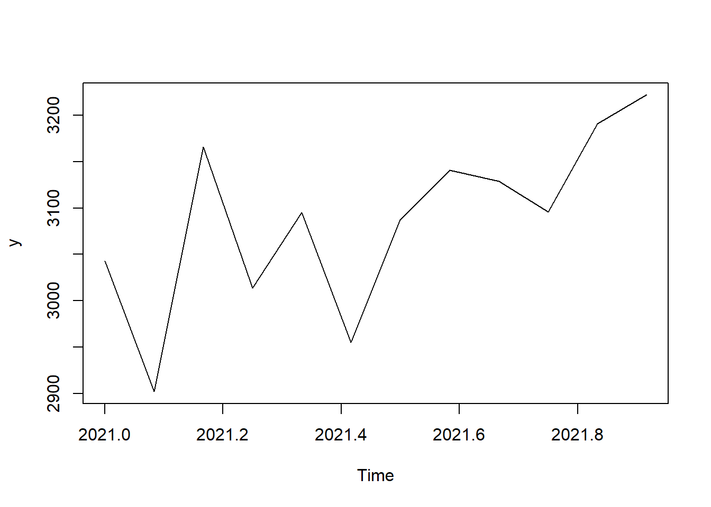
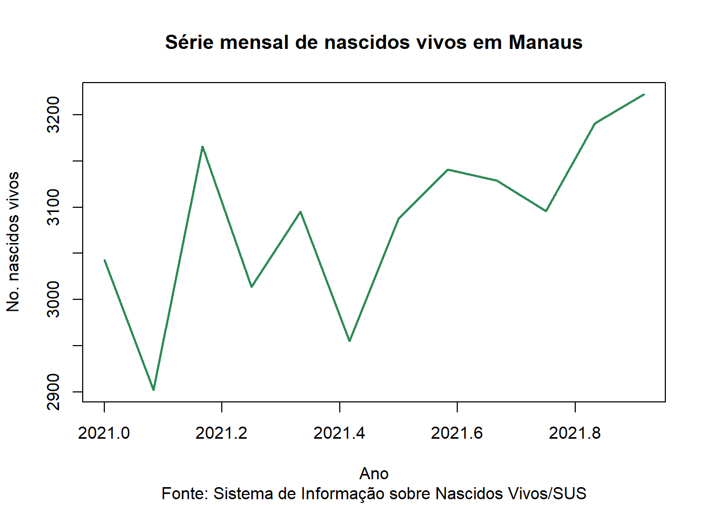
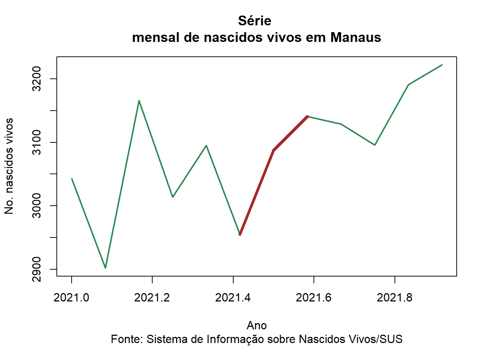
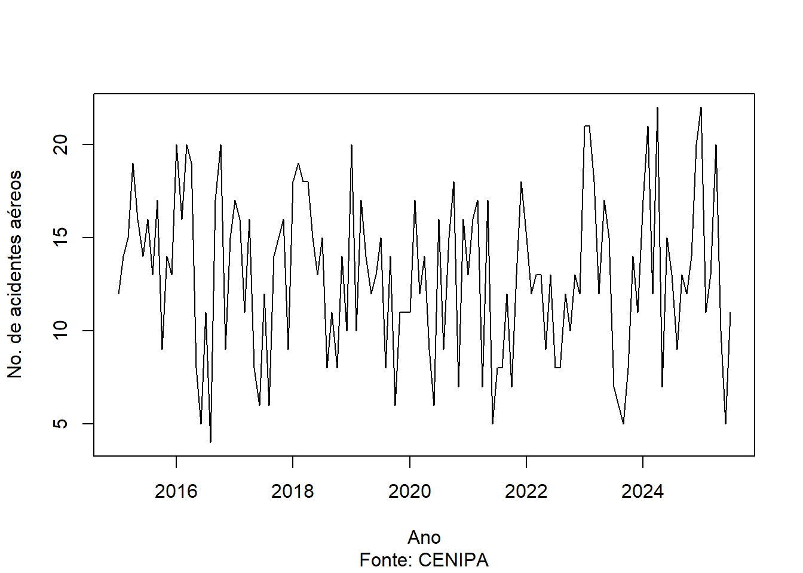

1Manipulação de séries temporais univariadas no software R
1.1 Definição de séries temporais
Considere um fenômeno aleatório que é observado ao longo do tempo. A coleção de variáveis aleatórias indexadas no tempo, associadas a este fenômeno, é denominada série temporal. Neste caso, para cada instante de tempo \(t\), há uma variável \(X(t)\) associada.

Figure 1 - Ilustração de uma série temporal
Alguns autores definem séries temporais simplesmente como valores observados ao longo do tempo.No entanto, essa definição não é útil para nós, uma vez que o tempo não necessariamente possui influência na variável, ou seja, é possível que a distribuição de \(X(t)\) não dependa de \(t\).
Importante: estamos interessados apenas em séries temporais nas quais o modelo de probabilidades depende do tempo \(t\).
A partir deste momento, \(X(t)\) será escrita como \(X_t\) e representará a variável aleatória associada ao tempo \(t\) e a versão minúscula \(x_t\) representará o valor observado.
1.2 A classe ts e a função window
Nessa seção vamos distutir a classe ts do R. Ela é particularmente útil para fazer gráficos de séries temporais. A função ts possui vários argumentos importantes:
data: vetor ou matriz da série observada
frequency: esse valor representa o número de observações por período. Vamos discutir essa particularidade em outro momento, mas para a maioria das séries, o período é representado por um ano e o valor de frequency está relacionado com quantas observações são necessárias para completar um ano. Por exemplo, se os dados são registrados mensalmente, temos frequency=12. Em caso de trimestres, frequency=4. O valor padrão é frequency=1.
deltat: é o inverso do número de observações por período. Apenas um entre frequency e deltat deve ser dado.
start: representa o tempo no qual a série começa. Pode ser representado por um único número ou por um vetor de dois números, com o segundo representando o momento dentro do período. Por exemplo:
se frequancy=12 (meses em um ano) então start=c(1996,2) implica que a primeira observação data de fevereiro de 1996.
se frequancy=4 (trimestres em um ano) então start=c(1996,2) implica que a primeira observação data do segundo trimestre dede 1996.
end: representa o tempo no qual a série termina. A sintaxe é a mesma do start
names: é um vetor com o nomes das séries. É utilizado apenas quando há mais de uma série temporal.
Exemplo
Vamos ilustrar a construção de um objeto ts`` utilizando a tabela abaixo, que apresenta o número de nascidos vivos por mês na cidade de Manaus em 2021.
Mês
No. nascidos vivos
Janeiro
3043
Fevereiro
2902
Março
3166
Abril
3014
Maio
3095
Junho
2955
Julho
3087
Agosto
3141
Setembro
3129
Outubro
3096
Novembro
3191
Dezembro
3222
Vamos guarda a série no vetor x e construir o objeto y na classe ts.
x <-c(3043, 2902, 3166, 3014,3095, 2955, 3087, 3141,3129, 3096, 3191, 3222)y <-ts( x, start =c(2021,1), frequency =12)y
Jan Feb Mar Apr May Jun Jul Aug Sep Oct Nov Dec
2021 3043 2902 3166 3014 3095 2955 3087 3141 3129 3096 3191 3222
A função plot reconhece um objeto na classe ts e constrói um gráfico com o tempo devidamente marcado no eixo as abscissas.
plot(y)

Outros detalhes gráficos da função plot podem ser utilizados.
plot(y, ylab ='No. nascidos vivos', lwd =2, col ='seagreen', xlab ='Ano', main ='Série mensal de nascidos vivos em Manaus', sub='Fonte: Sistema de Informação sobre Nascidos Vivos/SUS')

É possível extrair os argumentos de um ts já criado utilizando funções com os mesmos nomes dos respectivos argumentos. No exemplo acima, criamos o objeto denominado y. Abaixo, extraímos os argumentos deste objeto.
start(y)
[1] 2021 1
end(y)
[1] 2021 12
frequency(y)
[1] 12
deltat(y)
[1] 0.08333333
A função window é particularmente útil para selecionar um subconjunto da série temporal. Seus argumentos são os mesmos da função ts.
Exemplo Utilizando o mesmo conjunto de dados do exemplo anterior, vamos usar a função window para extrair apenas os nascimentos entre junho e agosto.
z <-window(y, start=c(2021,6), end =c(2021,8))z
Jun Jul Aug
2021 2955 3087 3141
Acima, z é um novo objeto ts. Podemos usar a função lines destacar a parte selecionada da série em um gráfico já existente. Abaixo, descatamos os dados selecionados em z.
plot(y, ylab ='No. nascidos vivos', lwd =2, col ='seagreen', xlab ='Ano', main ='Série mensal de nascidos vivos em Manaus', sub='Fonte: Sistema de Informação sobre Nascidos Vivos/SUS')lines(z, col ='brown', lwd =4 )

Exercício 1
A série abaixo representa o número de homicídios mensais no Amazonas, segundo causa básica de óbito, entre os anos 2000 e 2023.
Crie um janela para marcar o período entre o início da pandemia de COVID-19 (março de 2020) e o primeiro dia sem mortes por COVID-19 (julho de 2021)
Represente a janela acima no gráfico anterior. O que esse gráfico revela?
1.3 A classe Date e o pacote lubridate
Nessa seção discutimos a classe Date, responsável por operações com datas no R. São apresentadas as principais funções do pacote base. Em seguida, apresentamos o pacote lubridate, que oferece funções adicionais e uma sintaxe mais fluida.
No pacote base, as datas são objeto da classe Date. Abaixo, transformamos o texto que representa 3 de agosto de 1998 nessa classe.
# 3 de agosto de 1998 (formato americano)x <-'1998/8/3'y <-as.Date(x)
Existem diversas funções que interagem com objetos nessa classe:
weekdays: Retorna o dia da semana.
months: Retorna o nome do mês.
quarters: Retorna o trimestre do ano (Q1,Q2,Q3 ou Q4).
Abaixo, ilustramos o uso dessas funções com a data 3 de agosto de 1998.
weekdays(y)
[1] "segunda-feira"
months(y)
[1] "agosto"
quarters(y)
[1] "Q3"
Outra vantagem desta classe é a possibilidade de calcular a diferença em dias entre duas datas, utilizando a função -. Abaixo mostramos a diferença entre 3 de agosto de 1998 e 3 de agosto de 1999.
z <-as.Date('1999-08-03')z-y
Time difference of 365 days
Em certas aplicações, é necessário criar um vetor contendo datas em sequência. A função seq interage com objetos da classe Date, permitindo que o argumento by receba as strings day, week,month, quarter e year. Abaixo, criamos um vetor mensal que começa em 3 de agosto de 1998 e terminando e 3 de agosto de 1999.
Observe que a conversão da string para Date é realizada considerando o formato americano por padrão. É possível usar a função as.Date para ler qualquer formato, modificando o argumento format. No entanto, o pacote lubridate oferece funções mais simples para essa conversão:
ymd: Converte strings no formato “ano, mês, dia”, como “2023-10-26”.
mdy: Converte strings no formato “mês, dia, ano”, como “10-26-2023”.
dmy: Converte strings no formato “dia, mês, ano”, como “26-10-2023”.
Abaixo, transformamos a data 3/8/1998 para o formato americano.
require(lubridate)# 3 de agosto de 1998 (formato nacional)x <-'3/8/1998'dmy(x)
[1] "1998-08-03"
O lubridate também ofere a possibilidade de trabalhar com informações de tempo dentro de um dia, como horas, minutos e segundos. Por exemplo, a informação 15h30 de 3 de agosto de 1998 é lida como
x <-'3/8/1998 15:30:00'dmy_hms(x)
[1] "1998-08-03 15:30:00 UTC"
O lubridate possui as funções month e wday, que funcionam de modo análgo às funções months e weekdays. Além disso, o lubridate traz uma série de funções adicionais como:
year: retorna o ano de uma data
day: retornam o dia de uma data (útil para o formado xxx-xx-xx 00:00:00)
hour, minute, second: Retornam a hora, minuto e segundo de um objeto de data e tempo.
As funções de arredondamento de data também são úteis, especialmente para obter contagens mensais, anuais, etc. Elas são floor_date e ceiling_date e são responsáveis por arredondar uma data para o início ou o fim de um período, respectivamente. Abaixo, arredondamos a data 3 de agosto de 1998 para o começo do mês.
x <-dmy('03/08/1998')floor_date(x, 'month')
[1] "1998-08-01"
Exemplo
A Força Aérea Brasileira (FAB), por meio do Centro de Investigação e Prevenção de Acidentes Aeronáuticos (CENIPA), possui um dashboard para explorar dados sobre incidentes e acidentes aéreos no Brasil. Um acidente é definido como uma ocorrência grave associada à operação de uma aeronave que resulta em lesões ou morte, dano estrutural da aeronave ou aeronave desaparecida. Os demais casos são classificados como incidentes. Os dados, atualizados em 11/08/2025, estão disponíveis para esse curso na url abaixo:
# A tibble: 6 × 10
Link Data Matrícula Classificação Tipo Localidade UF Aeródromo Operação
<chr> <chr> <chr> <chr> <chr> <chr> <chr> <chr> <chr>
1 https… 05/0… **** INCIDENTE FALH… RIO DE JA… RJ FAER TÁXI AÉ…
2 https… 04/0… **** INCIDENTE FALH… MARICÁ RJ NCAD TÁXI AÉ…
3 https… 01/0… **** INCIDENTE FALH… RIO DE JA… RJ SBJR TÁXI AÉ…
4 https… 31/0… **** INCIDENTE FALH… PALMAS TO SBPJ REGULAR
5 https… 29/0… **** INCIDENTE FALH… BOA VISTA RR FAER TÁXI AÉ…
6 https… 29/0… **** INCIDENTE COLI… RECIFE PE SBRF REGULAR
# ℹ 1 more variable: Status <chr>
A unidade amostral é o acidente/indicente. Estamos interessados em criar uma série temporal com o número de acidentes mensais. Abaixo, filtramos apenas os acidentes (coluna Classificção) e, em seguida, transformamos as datas em objetos do tipo Date.
É sempre importante checar o resultado em contagem, para verificar se não há algum mês ausente. Como não o caso aqui, vamos construir um objeto do tipo ts e fazer o gráfico da série temporal.
serie <-ts(contagem, start=c(2015,1), frequency =12 )plot(serie, ylab ='No. de acidentes aéreos', xlab ='Ano', sub='Fonte: CENIPA' )

Exercício 2
A série abaixo contém as datas dos óbitos maternos no Brasil a partir de 2010.
Crie uma série temporal com o número de óbitos mensal e faça um gráfico. Crie uma janela para destacar no gráfico o período da pandemia de COVID-19 (março de 2020 até julhode 2021).